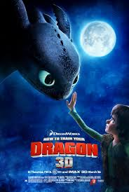

-
Spider-Man: Into the Spider-Verse (2018)

Filmin Konusu:
Genç Miles Morales, kendi evreninin Örümcek Adam'ı olur ve tüm gerçeklikler için bir tehdit oluşturan beş örümcek gücündeki bireyle birlikte diğer boyutlardan gelen örümceklerle işbirliği yapmak zorunda kalır.
IMDb Linki
Spider-Man IMDb Coco (2017)

Filmin Konusu
Müzisyen olmak isteyen Miguel, ailesinin müziğe getirdiği yasakla yüzleşince, efsanevi şarkıcı olan büyük büyük büyükbabasını bulmak için Ölüler Diyarı'na gider.
IMDb Linki
Coco IMDbUp (2009)

Filmin Konusu
78 yaşındaki Carl Fredricksen, balonlarla donatılmış eviyle Güney Amerika'ya seyahat ederken, istemeden genç bir yolcuyu da yanına alır.
IMDb Linki
Up IMDbHow to Train Your Dragon (2010)
Filmin Konusu
Ejderha avlamayı arzulayan talihsiz bir Viking, kendisi de genç bir ejderhanın beklenmedik dostu olur ve bu yaratıkların tahmin ettiğinden daha fazlası olabileceğini öğrenir.
IMDb Linki
Hoe to Train Your Dragon IMDb